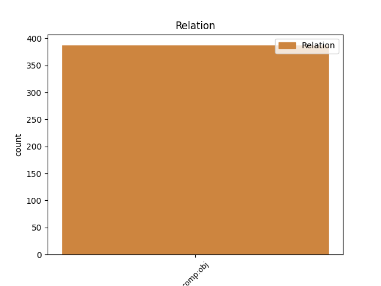
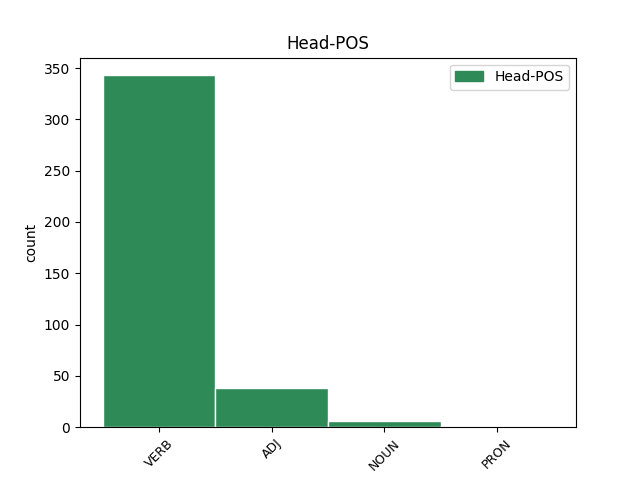
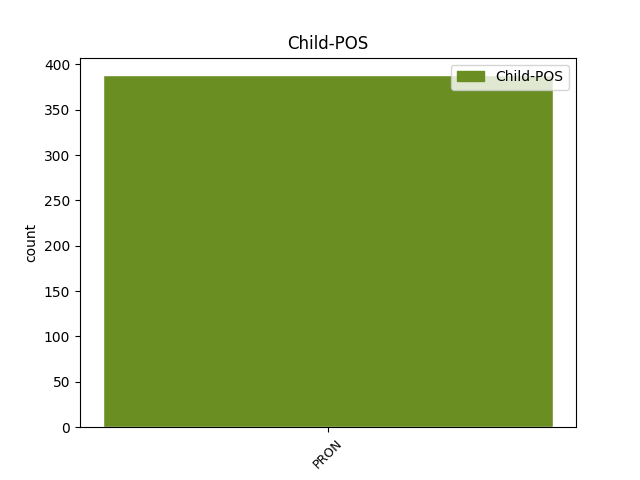

Distribution of features within this leaf



Agreement Rules sorted by frequency.
- When the dependent token is the direct object complements(comp:obj) of the head token, and the dependent token is PRON.
1 τέλος _ _ _ _ 0 _ _ _
2 δὲ _ _ _ _ 0 _ _ _
3 θεωρῶν _ _ _ _ 0 _ _ _
4 τοὺς _ _ _ _ 0 _ _ _
5 ὑπολοίπους _ _ _ _ 0 _ _ _
6 φίλους _ _ _ _ 0 _ _ _
7 μέλλοντας _ _ _ _ 0 _ _ _
8 αὐτῷ _ _ _ _ 0 _ _ _
9 τὰς _ _ _ _ 0 _ _ _
10 χεῖρας _ _ _ _ 0 _ _ _
11 προσφέρειν _ _ _ _ 0 _ _ _
12 , _ _ _ _ 0 _ _ _
13 φθάσας φθάνω VERB v-sapamn- Case=Nom|Gender=Masc|Number=Sing|Tense=Past|VerbForm=Part|Voice=Act 0 _ _ _
14 αὐτοὺς αὐτός PRON p-p---ma- Case=Acc|Gender=Masc|Number=Plur 13 comp:obj _ _
15 καὶ _ _ _ _ 0 _ _ _
16 νυκτὸς _ _ _ _ 0 _ _ _
17 διαδρὰς _ _ _ _ 0 _ _ _
18 ἀφίππευσεν _ _ _ _ 0 _ _ _
19 εἰς _ _ _ _ 0 _ _ _
20 τὰς _ _ _ _ 0 _ _ _
21 Συρακούσας _ _ _ _ 0 _ _ _
22 . _ _ _ _ 0 _ _ _
Disagree Examples:
1 διὸ _ _ _ _ 0 _ _ _
2 καὶ _ _ _ _ 0 _ _ _
3 ὁ _ _ _ _ 0 _ _ _
4 Ἀπόλλων _ _ _ _ 0 _ _ _
5 ἡσθεὶς _ _ _ _ 0 _ _ _
6 ἐπὶ _ _ _ _ 0 _ _ _
7 τούτοις _ _ _ _ 0 _ _ _
8 ἀναβολὴν _ _ _ _ 0 _ _ _
9 τοῦ _ _ _ _ 0 _ _ _
10 θανάτου _ _ _ _ 0 _ _ _
11 τῷ _ _ _ _ 0 _ _ _
12 Φαλάριδι _ _ _ _ 0 _ _ _
13 ἐχαρίσατο _ _ _ _ 0 _ _ _
14 , _ _ _ _ 0 _ _ _
15 τοῦτο οὗτος PRON p-s---na- Case=Acc|Gender=Neut|Number=Sing 16 comp:obj _ _
16 ἐμφήνας ἐμφαίνω VERB v-sapamn- Case=Nom|Gender=Masc|Number=Sing|Tense=Past|VerbForm=Part|Voice=Act 0 _ _ _
17 τοῖς _ _ _ _ 0 _ _ _
18 πυνθανομένοις _ _ _ _ 0 _ _ _
19 τῆς _ _ _ _ 0 _ _ _
20 Πυθίας _ _ _ _ 0 _ _ _
21 ὅπως _ _ _ _ 0 _ _ _
22 αὐτῷ _ _ _ _ 0 _ _ _
23 ἐπιθῶνται _ _ _ _ 0 _ _ _
24 · _ _ _ _ 0 _ _ _
1 διόπερ _ _ _ _ 0 _ _ _
2 καὶ _ _ _ _ 0 _ _ _
3 Δαρεῖος _ _ _ _ 0 _ _ _
4 τοῦτο οὗτος PRON p-s---na- Case=Acc|Gender=Neut|Number=Sing 5 comp:obj _ _
5 μαθὼν μανθάνω VERB v-sapamn- Case=Nom|Gender=Masc|Number=Sing|Tense=Past|VerbForm=Part|Voice=Act 0 _ _ _
6 ηὔξατο _ _ _ _ 0 _ _ _
7 τῷ _ _ _ _ 0 _ _ _
8 Ἡλίῳ _ _ _ _ 0 _ _ _
9 τὰς _ _ _ _ 0 _ _ _
10 χεῖρας _ _ _ _ 0 _ _ _
11 ἀνατείνας _ _ _ _ 0 _ _ _
12 ἢ _ _ _ _ 0 _ _ _
13 αὐτὸν _ _ _ _ 0 _ _ _
14 βασιλεύειν _ _ _ _ 0 _ _ _
15 ἢ _ _ _ _ 0 _ _ _
16 Ἀλέξανδρον _ _ _ _ 0 _ _ _
17 . _ _ _ _ 0 _ _ _
1 καὶ _ _ _ _ 0 _ _ _
2 ὁ _ _ _ _ 0 _ _ _
3 Σοφοκλῆς _ _ _ _ 0 _ _ _
4 ἀκούσας _ _ _ _ 0 _ _ _
5 ἐποίησεν _ _ _ _ 0 _ _ _
6 εἰς _ _ _ _ 0 _ _ _
7 αὐτὸν _ _ _ _ 0 _ _ _
8 τὸ _ _ _ _ 0 _ _ _
9 τοιοῦτον _ _ _ _ 0 _ _ _
10 ἐπίγραμμα _ _ _ _ 0 _ _ _
11 , _ _ _ _ 0 _ _ _
12 χρησάμενος _ _ _ _ 0 _ _ _
13 τῷ _ _ _ _ 0 _ _ _
14 περὶ _ _ _ _ 0 _ _ _
15 τοῦ _ _ _ _ 0 _ _ _
16 Ἡλίου _ _ _ _ 0 _ _ _
17 καὶ _ _ _ _ 0 _ _ _
18 Βορέου _ _ _ _ 0 _ _ _
19 λόγῳ _ _ _ _ 0 _ _ _
20 , _ _ _ _ 0 _ _ _
21 καί _ _ _ _ 0 _ _ _
22 τι τις PRON p-s---na- Case=Acc|Gender=Neut|Number=Sing 26 comp:obj _ _
23 πρὸς _ _ _ _ 0 _ _ _
24 μοιχείαν _ _ _ _ 0 _ _ _
25 αὐτοῦ _ _ _ _ 0 _ _ _
26 παραινιττόμενος παρά-αἰνίσσομαι VERB v-sppemn- Case=Nom|Gender=Masc|Number=Sing|Tense=Pres|VerbForm=Part|Voice=Mid 0 _ _ _
27 · _ _ _ _ 0 _ _ _
1 καὶ _ _ _ _ 0 _ _ _
2 Φιλήμων _ _ _ _ 0 _ _ _
3 τοῦ _ _ _ _ 0 _ _ _
4 αὐτοῦ αὐτός PRON p-s---ng- Case=Gen|Gender=Neut|Number=Sing 5 comp:obj _ _
5 μνημονεύων μνημονεύω VERB v-sppamn- Case=Nom|Gender=Masc|Number=Sing|Tense=Pres|VerbForm=Part|Voice=Act 0 _ _ _
6 φησὶν _ _ _ _ 0 _ _ _
7 · _ _ _ _ 0 _ _ _
1 ἐξέδωκεν _ _ _ _ 0 _ _ _
2 δὲ _ _ _ _ 0 _ _ _
3 καὶ _ _ _ _ 0 _ _ _
4 Ἱππάρχῳ _ _ _ _ 0 _ _ _
5 τῷ _ _ _ _ 0 _ _ _
6 υἱεῖ _ _ _ _ 0 _ _ _
7 τὴν _ _ _ _ 0 _ _ _
8 παραιβατήσασαν παρά-βατέω VERB v-sapafa- Case=Acc|Gender=Fem|Number=Sing|Tense=Past|VerbForm=Part|Voice=Act 0 _ _ _
9 αὑτῷ ἑαυτοῦ PRON p-s---md- Case=Dat|Gender=Masc|Number=Sing 8 comp:obj _ _
10 γυναῖκα _ _ _ _ 0 _ _ _
11 Φύην _ _ _ _ 0 _ _ _
12 τὴν _ _ _ _ 0 _ _ _
13 Σωκράτους _ _ _ _ 0 _ _ _
14 θυγατέρα _ _ _ _ 0 _ _ _
15 , _ _ _ _ 0 _ _ _
16 καὶ _ _ _ _ 0 _ _ _
17 Χάρμου _ _ _ _ 0 _ _ _
18 τοῦ _ _ _ _ 0 _ _ _
19 πολεμαρχήσαντος _ _ _ _ 0 _ _ _
20 θυγατέρα _ _ _ _ 0 _ _ _
21 ἔλαβεν _ _ _ _ 0 _ _ _
22 Ἱππίᾳ _ _ _ _ 0 _ _ _
23 περικαλλεστάτην _ _ _ _ 0 _ _ _
24 οὖσαν _ _ _ _ 0 _ _ _
25 τῷ _ _ _ _ 0 _ _ _
26 μετ̓ _ _ _ _ 0 _ _ _
27 αὐτὸν _ _ _ _ 0 _ _ _
28 τυραννεύσαντι _ _ _ _ 0 _ _ _
29 . _ _ _ _ 0 _ _ _